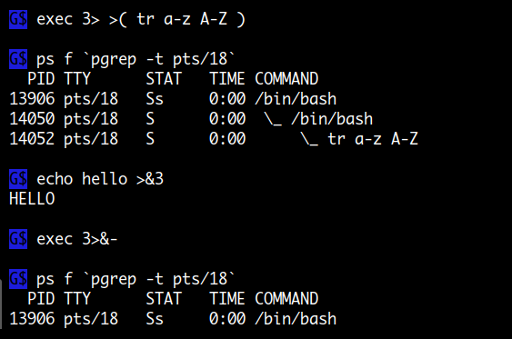

Process Substitution
<( <COMMANDS> )
>( <COMMANDS> )
프로세스 치환은 표현식 내의 명령문이 background 프로세스로 실행되고 파이프를 통해 데이터가 전달됩니다.
명령의 인수로 파일을 사용하는 곳에서 사용될 수 있으나 일반적인 파일과는 다르므로
프로그램 내에서 파일 타입을 직접 체킹하는 경우 실행되지 않을수도 있습니다.
파일을 읽거나 쓰기를 할때 random access 를 할 수 없으므로 한번에 처음부터 끝까지 읽거나 써야합니다.
파이프가 가지는 방향성을 > < 문자를 이용해 표시하는 named pipe 파일이라고 생각하면 됩니다.
프로세스 치환은
sh에서는 사용할 수 없습니다.
# '>( )' 표현식 내의 명령은 subshell 에서 실행되므로 '$$' 값이 같게나온다.
$ { echo '$$1' : $$ >&2 ;} > >( echo '$$2' : $$ )
$$1 : 504
$$2 : 504
# 하지만 '$BASHPID' 는 다르게 나온다.
$ { echo '$BASHPID1' : $BASHPID >&2 ;} > >( echo '$BASHPID2' : $BASHPID )
$BASHPID1 : 504
$BASHPID2 : 22037
........................................................
$ args.sh <( echo 111 ) <( echo 222 ) <( echo 222 )
$0 : /home/mug896/bin/args.sh
$1 : /dev/fd/63
$2 : /dev/fd/62
$3 : /dev/fd/61
$ ls -l <( : )
lr-x------ 1 mug896 mug896 64 02.07.2015 22:29 /dev/fd/63 -> pipe:[681827]
$ [ -f <( : ) ]; echo $? # 일반 파일인지 테스트
1
$ [ -p <( : ) ]; echo $? # pipe 인지 테스트
0
sleep 명령은 현재 shell 에서 실행되고 표현식 내의 cat 명령은 subshell 에서 실행되는 것을 볼 수 있습니다.
{ sleep 10 ;} > >( cat )

현재 shell 과 표현식 에서의 FD
command1 > >( command2 ) 명령의 경우 command1 의 stdout 이 command2 의 stdin 과 연결되며
command1 < <( command2 ) 명령의 경우는 command2 의 stdout 이 command1 의 stdin 과 연결됩니다.
현재 shell pid 를 나타내는 $$ 변수는 subshell 에서도 동일한 값을 가지므로 >( ) 표현식 내에서의 FD 상태를 보기 위해서는 $BASHPID 변수를 이용해야 합니다.
>( . . . )
현재 shell 의 stdout 이 파이프에 연결되어 출력되고 표현식 내의 subshell 에서는 stdin 이 파이프에 연결되어 입력을 받고 있습니다.
개별적으로 명령을 실행하여 파이프 번호가 다르게 나오지만 실제 명령이 실행될 때는 같게 됩니다.

<( . . . )
표현식 내의 subshell 은 stdout 이 파이프에 연결되어 출력되고 현재 shell 에서는 stdin 이 파이프에 연결되어 입력을 받고 있습니다.
개별적으로 명령을 실행하여 파이프 번호가 다르게 나오지만 실제 명령이 실행될 때는 같게 됩니다.

사용예 )
프로세스 치환을 사용하는 이유는 임시 파일을 만들지 않아도 된다는 점입니다. 가령 ulimit 명령의 soft limit 과 hard limit 출력값을 서로 비교한다면 아래와 같이 명령 실행 결과를 임시파일로 만든후 비교해야 합니다. 하지만 프로세스 치환을 이용하면 내부적으로 파이프를 이용해 처리하기 때문에 임시파일을 만들 필요가 없습니다.
$ ulimit -Sa > ulimit.Sa.out
$ ulimit -Ha > ulimit.Ha.out
$ diff ulimit.Sa.out ulimit.Ha.out
프로세스 치환을 사용해 비교
# 임시파일을 만들 필요가 없다
$ diff <( ulimit -Sa ) <( ulimit -Ha )
1c1
< core file size (blocks, -c) 0
---
> core file size (blocks, -c) unlimited
8c8
< open files (-n) 1024
---
> open files (-n) 65536
12c12
< stack size (kbytes, -s) 8192
---
> stack size (kbytes, -s) unlimited
................................................
$ diff <(gcc -Q -O2 --help=optimizers) <(gcc -Q -O3 --help=optimizers) | grep enabled
> -fgcse-after-reload [enabled]
> -finline-functions [enabled]
> -fipa-cp-clone [enabled]
. . . .
위의 프로세스 치환을 이용한 비교는 다음과 동일하다고 볼 수 있습니다.
mkfifo fifo1
mkfifo fifo2
ulimit -Sa > fifo1 &
ulimit -Ha > fifo2 &
diff fifo1 fifo2
rm fifo1 fifo2
$ echo hello > >( wc )
1 1 6
$ wc < <( echo hello )
1 1 6
------------------------
# 입력과 출력용 프로세스 치환을 동시에 사용
$ f1() {
cat "$1" > "$2"
}
$ f1 <( echo 'hi there' ) >( tr a-z A-Z )
HI THERE
------------------------------------------------------
# --log-file 옵션 값으로 입력 프로세스 치환이 사용됨
$ rsync -avH --log-file=>(grep -v '\.tmp' > log.txt) src/ host::dst/
-----------------------------------------------------------------
# tee 명령을 이용해 결과를 3개의 입력 프로세스 치환으로 전달하여 처리
$ ps -ef | tee >(awk '$1 == "tom"' > toms-procs.txt) \
>(awk '$1 == "root"' > roots-procs.txt) \
>(awk '$1 == "httpd"' > httpd-procs.txt)
-----------------------------------------------------------------
# dd 명령에서 입력 파일로 사용
$ dd if=<( tr -dc A-Z < /dev/urandom ) of=outfile bs=1M count=10 iflag=fullblock
스크립트 작성 시에 명령 실행 결과를 받아서 처리하고자 할때 파이프를 사용하는데요. 파이프는 연결된 모든 명령들이 각자의 subshell 에서 실행되어 parent 변수에 연산 결과를 저장할 수가 없습니다. 이때 프로세스 치환을 이용하면 문제를 해결할 수 있습니다.
i=0
sort list.txt | while read -r line; do
(( i++ ))
...
done
echo "$i lines processed"
# 파이프로 인해 parent 변수 i 에 값을 설정할수 없어 항상 0 이 표시된다.
0 lines processed
------------------------------------
i=0
while read -r line; do
(( i++ ))
...
done < <(sort list.txt)
echo "$i lines processed"
# 프로세스 치환을 이용해 while 문이 현재 shell 에서 실행되어 i 값을 설정할수 있다.
12 lines processed
명령 실행 결과 stderr 만 전달하려고 할 때 프로세스 치환을 이용하면 쉽게 할 수 있습니다.
$ command 2> >( command ... )
# 파이프를 이용할 경우
$ command 2>&1 > /dev/null | command ...
# cmd1 은 stdout 을 처리, cmd2 는 stderr 를 처리
$ command > >( cmd1 ) 2> >( cmd2 )
redirection
$ cat test.sh
#!/bin/bash
echo yes1 # yes 는 stdout 으로 출력되는 메시지
echo >&2 error1 # error 는 stderr 로 출력되는 메시지
echo yes2
echo >&2 error2
------------------
# test.sh 명령의 stderr 출력이 sed 명령으로 전달되어 stdout 으로 출력.
# 따라서 현재 command line 은 출력이 모두 stdout 이됩니다.
$ ./test.sh 2> >( sed 's/.*/X & X/' )
yes1
yes2
X error1 X
X error2 X
$ { ./test.sh 2> >( sed 's/.*/X & X/' ) ;} > /dev/null
$
# sed 에서 처리된 error 메시지가 stderr 로 출력되려면 >&2 를 붙입니다.
$ { ./test.sh 2> >( sed 's/.*/X & X/' >&2 ) ;} > /dev/null
X error1 X
X error2 X
표현식 내 명령은 background 로 실행됩니다.
다음을 보시면 exec 명령 실행 후에 tr 명령이 subshell 에서 background 로 실행되고 있는 것을 볼 수 있습니다.

main 프로세스와 PGID 가 다르다.

위의 그림은 프롬프트 에서 join <(sleep 10) <(sleep 10) 명령을 실행했을 때의 ps 를 나타내는데요.
파이프로 명령을 실행했을 때는 연결된 명령들이 같은 PGID 를 갖는데 반해 프로세스 치환은
main 명령에 해당하는 join 과 PGID 가 다른 것을 볼 수 있습니다.
따라서 다음과 같이 시간이 소요되는 명령을 실행 중에 Ctrl-c 로 종료를 시도한다면
join 프로세스는 바로 종료되겠지만 large_data 파일을 처리중인 sort 는 종료되지 않고 남아있게 됩니다.
join -t, -1 1 -2 3 <(sort -t, -k1,1 keys) <(sort -t, -k3,3 large_data)
Quiz
프로세스 치환에서 사용되는 명령은 background 로 실행되므로
>( ... ) 에서 실행되는 명령이 시간이 오래 걸릴경우 main 프로세스가 먼저 종료할 수 있습니다.
다음 코드를 실행해 보면 메인 프로세스가 먼저 종료된 상태에서 >( ... ) 에서 실행되는
명령의 출력이 발생하는 것을 볼 수 있는데요.
어떻게 하면 >( ... ) 에서 실행되는 명령이 모두 종료한 후에
메인 프로세스가 종료되게 할 수 있을까요?
#!/bin/bash
while read -r line; do
case $line in
aaa* ) echo "$line" >& $fd1 ;;
bbb* ) echo "$line" >& $fd2 ;;
esac
done \
{fd1}> >( while read line; do echo "$line" | sed 's/x/y/g'; sleep 1; done ) \
{fd2}> >( while read line; do echo "$line" | sed 's/x/z/g'; sleep 2; done ) \
< <( for ((i=0; i<4; i++)); do echo aaaxxx; echo bbbxxx; done );
다음과 같이 >( ... ) subshell 과 메인 프로세스에서 실행되는 cat 명령을 파이프로 연결해 주면 됩니다.
이것은 >( ... ) 출력이 터미널로 될 때뿐만 아니라 sed s/x/y/g > file 와 같이
파일로 출력을 할 경우도 모두 가능합니다.
#!/bin/bash
while read -r line; do
case $line in
aaa* ) echo "$line" >& $fd1 ;;
bbb* ) echo "$line" >& $fd2 ;;
esac
done \
{fd1}> >( while read line; do echo "$line" | sed 's/x/y/g' ; sleep 1; done; ) \
{fd2}> >( while read line; do echo "$line" | sed 's/x/z/g' ; sleep 2; done; ) \
< <( for ((i=0; i<4; i++)); do echo aaaxxx; echo bbbxxx; done ) \
| cat <--------- 메인 프로세스에서 실행되는 cat 명령
위의 예제 같은 경우는 while 문에 의해 매번 sed 명령이 종료되므로 메시지 출력순서가 유지되지만 만약에 다음과 같이 직접 sed 명령이 cat 파이프와 연결된다면 아래 두 번째 예제와 같이 sed 의 버퍼관련 옵션을 설정해 주어야 메시지 출력순서가 유지됩니다.
#!/bin/bash
while read -r line; do
case $line in
aaa* ) sleep .2; echo "$line" >& $fd1 ;;
bbb* ) sleep .5; echo "$line" >& $fd2 ;;
esac
done \
{fd1}> >( sed 's/x/y/g' ) \
{fd2}> >( sed 's/x/z/g' ) \
< <( for ((i=0; i<4; i++)); do echo aaaxxx; echo bbbxxx; done ) \
| cat
$ ./test.sh # 메시지 출력순서가 유지되지 않고 잠시후에 종료될때 한꺼번에 출력된다.
bbbzzz
bbbzzz
bbbzzz
bbbzzz
aaayyy
aaayyy
aaayyy
aaayyy
---------------------------------------------------------------------
#!/bin/bash
while read -r line; do
case $line in
aaa* ) sleep .2; echo "$line" >& $fd1 ;;
bbb* ) sleep .5; echo "$line" >& $fd2 ;;
esac
done \
{fd1}> >( stdbuf -oL sed 's/x/y/g' ) \
{fd2}> >( stdbuf -oL sed 's/x/z/g' ) \
< <( for ((i=0; i<4; i++)); do echo aaaxxx; echo bbbxxx; done ) \
| cat
$ ./test.sh # 파이프나 파일로 쓰기를 할때는 항상 버퍼관련 옵션 처리를 해주어야 한다.
aaayyy
bbbzzz
aaayyy
bbbzzz
aaayyy
bbbzzz
aaayyy
bbbzzz
2 .
diff 명령을 이용하면 간단히 두개의 디렉토리를 서로 비교할 수 있는데요.
비교하려는 디렉토리가 remote 서버에 존재하는 경우는 어떻게 할까요?
$ diff -rq BUILD.1 BUILD.2
Only in BUILD.1/lib: libtlpi.a # BUILD.1 디렉토리에만 존재하는 파일
Files BUILD.1/lib/pty_fork.o and BUILD.2/lib/pty_fork.o differ
Files BUILD.1/lib/pty_master_open.d and BUILD.2/lib/pty_master_open.d differ
rsync 명령의 --dry-run 옵션을 이용하는 방법이 있지만 여기서는 프로세스 치환을 이용해 보겠습니다. remote 파일을 비교하는 것이므로 파일을 다운로드하지 않고 md5sum 을 이용해 비교합니다. awk 에서 파일 경로를( 파일명 포함 ) array 의 index 로 하고 md5sum 값을 value 로 사용합니다.
$ awk 'BEGIN {
# find 명령에 사용된 local, remote 디렉토리를 여기도 입력해줍니다.
dir1 = length("path/to/local/BUILD")
dir2 = length("path/to/remote/BUILD")
while (getline < ARGV[1]) a[substr($2,dir1+2)] = $1 # $1 는 md5sum
while (getline < ARGV[2]) { i = substr($2,dir2+2); b[i] = $1
# a[i] 의 값이 존재하지 않는다는 것은 b 에만 존재하는 파일
if ( !a[i] ) { print ">>> Only " i; delete a[i]; delete b[i]; continue }
# a[i] 와 b[i] 의 md5sum 값이 다르다는 것은 파일이 변경되었다는 의미
if ( a[i] != b[i] ) print "Differ " i
delete a[i]; delete b[i]
}
# 앞서 비교후에 array 원소를 모두 delete 하였으므로 남은것은 a 에만 존재하는 파일
for (i in a) print "<<< Only " i
}' <( find path/to/local/BUILD -type f -exec md5sum {} + ) \
<( ssh user@remote 'find path/to/remote/BUILD -type f -exec md5sum {} +' )
Differ file/filebuff/direct_read.o
Differ timers/real_timer.o
Differ mmap/mmcat.d
>>> Only proc/lib/get_num.o # remote 에만 존재하는 파일
<<< Only proc/lib/signal.d # local 에만 존재하는 파일